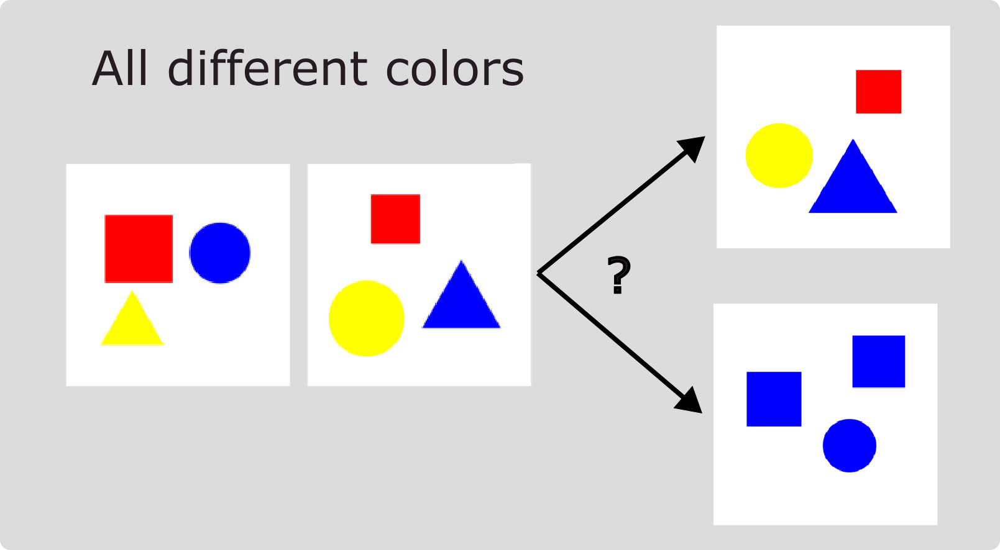

BEARS Make Neuro-Symbolic Models Aware of their Reasoning Shortcuts
Codebase for the paper:
BEARS Make Neuro-Symbolic Models Aware of their Reasoning Shortcuts, E. Marconato, S. Bortolotti, E. van Krieken, A. Vergari, A. Passerini, S. Teso

@misc{marconato2024bears,
title={BEARS Make Neuro-Symbolic Models Aware of their Reasoning Shortcuts},
author={Emanuele Marconato and Samuele Bortolotti and Emile van Krieken and Antonio Vergari and Andrea Passerini and Stefano Teso},
year={2024},
eprint={2402.12240},
archivePrefix={arXiv},
primaryClass={cs.LG}
}
If you find the code useful, please consider citing it.

Welcome, welcome, welcome
To the big blue house
Door is open come on in
Now you're here
So lets... begin
Abstract
Neuro-Symbolic (NeSy) predictors that conform to symbolic knowledge - encoding, e.g., safety constraints - can be affected by Reasoning Shortcuts (RSs): They learn concepts consistent with the symbolic knowledge by exploiting unintended semantics. RSs compromise reliability and generalization and, as we show in this paper, they are linked to NeSy models being overconfident about the predicted concepts. Unfortunately, the only trustworthy mitigation strategy requires collecting costly dense supervision over the concepts. Rather than attempting to avoid RSs altogether, we propose to ensure NeSy models are aware of the semantic ambiguity of the concepts they learn, thus enabling their users to identify and distrust low-quality concepts. Starting from three simple desiderata, we derive bears (BE Aware of Reasoning Shortcuts), an ensembling technique that calibrates the model’s concept-level confidence without compromising prediction accuracy, thus encouraging NeSy architectures to be uncertain about concepts affected by RSs. We show empirically that bears improves RS-awareness of several state-of-the-art NeSy models, and also facilitates acquiring informative dense annotations for mitigation purposes.
Installation and use
To run experiments on XOR, MNIST-Addition, Kandinsky and BDD-OIA, access the linux terminal and use the conda installation followed by pip3:
$conda env create -n rs python=3.8
$conda activate rs
$pip install -r requirements.txt
BDD-OIA (2048)
BDD-OIA is a dataset of dashcams images for autonomous driving predictions, annotated with input-level objects (like bounding boxes of pedestrians, etc.) and concept-level entities (like “road is clear”). The original dataset can be found here: https://twizwei.github.io/bddoia_project/
The dataset is preprocessed with a pretrained Faster-RCNN on BDD-100k and with the first module in CBM-AUC (Sawada and Nakamura, IEEE (2022)), leading to embeddings of dimension 2048. These are reported in the zip bdd_2048.zip. The original repo of CBM-AUC can be found here https://github.com/AISIN-TRC/CBM-AUC.

For usage, consider citing the original dataset creators and Sawada and Nakamura:
@InProceedings{xu2020cvpr,
author = {Xu, Yiran and Yang, Xiaoyin and Gong, Lihang and Lin, Hsuan-Chu and Wu, Tz-Ying and Li, Yunsheng and Vasconcelos, Nuno},
title = {Explainable Object-Induced Action Decision for Autonomous Vehicles},
booktitle = {IEEE/CVF Conference on Computer Vision and Pattern Recognition (CVPR)},
month = {June},
year = {2020}}
@ARTICLE{sawada2022cbm-auc,
author={Sawada, Yoshihide and Nakamura, Keigo},
journal={IEEE Access},
title={Concept Bottleneck Model With Additional Unsupervised Concepts},
year={2022},
volume={10},
number={},
pages={41758-41765},
doi={10.1109/ACCESS.2022.3167702}}
MNIST
This repository comprises several MNIST variations. The most relevant ones are:
MNIST-Even-Odd:
The MNIST-Even-Odd dataset is a variant of MNIST-Addition introduced by Marconato et al. (2023b). It consists of specific combinations of digits, including only even or odd digits, such as 0+6=6, 2+8=10, and 1+5=6. The dataset comprises 6720 fully annotated samples in the training set, 1920 samples in the validation set, and 960 samples in the in-distribution test set. Additionally, there are 5040 samples in the out-of-distribution test dataset, covering all other sums not observed during training. The dataset is associated with reasoning shortcuts, and the number of deterministic RSs was calculated to be 49 by solving a linear system.
MNIST-Half:
MNIST-Half is a biased version of MNIST-Addition, focusing on digits ranging from 0 to 4. Selected digit combinations include 0+0=0, 0+1=1, 2+3=5, and 2+4=6. Unlike MNIST-Even-Odd, two digits (0 and 1) are not affected by reasoning shortcuts, while 2, 3, and 4 can be predicted differently. The dataset comprises 2940 fully annotated samples in the training set, 840 samples in the validation set, and 420 samples in the test set. Additionally, there are 1080 samples in the out-of-distribution test dataset, covering remaining sums with the included digits.
Kandinksy
The Kandinsky dataset, introduced by Müller and Holzinger in 2021, features visual patterns inspired by the artistic works of Wassily Kandinsky. Each pattern is constructed with geometric figures and encompasses two main concepts: shape and color. The dataset proposes a variant of Kandinsky where each image contains a fixed number of figures, and each figure can have one of three possible colors (red, blue, yellow) and one of three possible shapes (square, circle, triangle).
In an active learning setup, resembling an IQ test for machines, the task involves predicting the pattern of a third image given two images that share a common pattern. During inference, a model, such as the NeSy model mentioned in the experiment, computes a series of predicates like “same_cs” (same color and shape) and “same_ss” (same shape and same color). The model needs to choose the third image that completes the pattern based on these computed predicates. For example, if the first two images have different colors, the model should select the option that aligns with the observed pattern. The dataset provides a challenging task that tests a model’s ability to generalize and infer relationships between visual elements.

Structure of the code
The code structure is the same as Marconato Reasoning Shortcuts: XOR, Kandinksy and MNIST-Addition are in single project folder, located in
XOR_MNIST. Here, we defined:backbonescontains the architecture of the NNs used.datasetscointains the various versions of MNIST addition. If you want to add a dataset it has to be located here.exampleis an independent folder containing all the experiments and setup for running XORmodelscontains all models used to benchmark the presence of RSs. Here, you can find DPL, SL, and LTN + recunstruction, but also a simple concept extractor (cext.py) and conditional VAEs (cvae.py)utilscontains the training loop, the losses, the metrics and (only wandb) loggersexp_best_args.pyis where I collected all best hyper-parameters for MNIST-Addition and XOR.you can use
experiments.pyto prepare a stack of experiments. If you run on a cluster, you can runserver.pyto access submitit and schedule a job array or userun_start.shto run a single experiment.
BDD_OIAfollows the design of Sawada and can be executed launchingrun_bdd.sh. Hyperparameters are already set.args in
utils.args.py:–dataset: choose the dataset
–task: addition/product/multiop
–model: which model you choose, remember to add rec at end if you want to add reconstruction penalty
–c_sup: percentage of concept supervision. If zero, then 0% of examples are supervise, if 1, then 100% of examples have concept supervision
–which_c: pass a list to specify which concepts you want to supervise, e.g. [1,2], will activate supervision for only concept 1 and 2
–joint: if included it will process both MNIST digits all together
–entropy: if included it will add the entropy penalty
–w_sl: weight for the Semantic Loss
–gamma: general weight for the mitigation strategy (this will multiply with other weights. My advice is to set it to 1)
–wrec, –beta, –w_h, –w_c: different weights for penalties (see also args description)
–do-test: activate the test method. Refer to this others arguments to try out all the possible testing operations.
others are quite standard, consider using also:
–wandb: put here the name of your project, like ‘i-dont-like-rss’
–checkin, –checkout: specify path were to load and to save checkpoints, respectivey
–validate: activate it to use the validation set (this is a switch from val to test)
Issues report, bug fixes, and pull requests
For all kind of problems do not hesitate to contact me. If you have additional mitigation strategies that you want to include as for others to test, please send me a pull request.
Makefile
To see the Makefile functions, simply call the appropriate help command with GNU/Make
make help
The Makefile provides a simple and convenient way to manage Python virtual environments (see venv).
Environment creation
In order to create the virtual enviroment and install the requirements be sure you have the Python 3.9 (it should work even with more recent versions, however I have tested it only with 3.9)
make env
source ./venv/reasoning-shortcut/bin/activate
make install
Remember to deactivate the virtual enviroment once you have finished dealing with the project
deactivate
Generate the code documentation
The automatic code documentation is provided Sphinx v4.5.0.
In order to have the code documentation available, you need to install the development requirements
pip install --upgrade pip
pip install -r requirements.dev.txt
Since Sphinx commands are quite verbose, I suggest you to employ the following commands using the Makefile.
make doc-layout
make doc
The generated documentation will be accessible by opening docs/build/html/index.html in your browser, or equivalently by running
make open-doc
However, for the sake of completeness one may want to run the full Sphinx commands listed here.
sphinx-quickstart docs --sep --no-batchfile --project bears--author "The Reasoning Shortcut Gang" -r 0.1 --language en --extensions sphinx.ext.autodoc --extensions sphinx.ext.napoleon --extensions sphinx.ext.viewcode --extensions myst_parser
sphinx-apidoc -P -o docs/source .
cd docs; make html
Libraries and extra tools
This code is adapted from Marconato Reasoning Shortcuts. To implement PCBMs, we employed some functions from Kim ProbCBM.
Laplace
Since Laplace is not meant to deal with a Neuro-Symbolic architecture and neither with multiclass classification problems, we define our own fork which is expected to work only with our networks.
Here we list the steps we performed:
Go to
laplace/utils/feature_extractor.pyAdd the following line to
find_last_layer:
if key != 'original_model.encoder.dense_c' and key != 'original_model.conceptizer.enc1':
continue
so that the library takes the concept bottleneck as the Laplace model.
Go to
laplace/lllaplace.pyAdd the following line to
_nn_predictive_samples:
self.model.model.model_possibilities = [None] * n_samples
fs = list()
for i, sample in enumerate(self.sample(n_samples)):
vector_to_parameters(sample, self.model.last_layer.parameters())
self.model.model.model_possibilities[i] = sample
fs.append(self.model(X.to(self._device)).detach())
so that the wrapper model knows to start tracking the output predictions.
Where the added lines are: self.model.model.model_possibilities = [None] * n_samples
and self.model.model.model_possibilities[i] = sample
Moreover in the file laplace/curvature/curvature.py change this:
def BCE_forloop(tar,pred):
loss = F.binary_cross_entropy(tar[0, :4], pred[0, :4])
for i in range(1,len(tar)):
loss = loss + F.binary_cross_entropy(tar[i, :4], pred[i, :4])
return loss
def CE_forloop(y_pred, y_true):
y_trues = torch.split(y_true, 1, dim=-1)
y_preds = torch.split(y_pred, 2, dim=-1)
loss = 0
for i in range(4):
true = y_trues[i].view(-1)
pred = y_preds[i]
loss_i = F.nll_loss( pred.log(), true.to(torch.long) )
loss += loss_i / 4
assert loss_i > 0, pred.log()
return loss
class CurvatureInterface:
"""Interface to access curvature for a model and corresponding likelihood.
A `CurvatureInterface` must inherit from this baseclass and implement the
necessary functions `jacobians`, `full`, `kron`, and `diag`.
The interface might be extended in the future to account for other curvature
structures, for example, a block-diagonal one.
Parameters
----------
model : torch.nn.Module or `laplace.utils.feature_extractor.FeatureExtractor`
torch model (neural network)
likelihood : {'classification', 'regression'}
last_layer : bool, default=False
only consider curvature of last layer
subnetwork_indices : torch.Tensor, default=None
indices of the vectorized model parameters that define the subnetwork
to apply the Laplace approximation over
Attributes
----------
lossfunc : torch.nn.MSELoss or torch.nn.CrossEntropyLoss
factor : float
conversion factor between torch losses and base likelihoods
For example, \\(\\frac{1}{2}\\) to get to \\(\\mathcal{N}(f, 1)\\) from MSELoss.
"""
def __init__(self, model, likelihood, last_layer=False, subnetwork_indices=None):
assert likelihood in ['regression', 'classification']
self.likelihood = likelihood
self.model = model
self.last_layer = last_layer
self.subnetwork_indices = subnetwork_indices
if likelihood == 'regression':
self.lossfunc = MSELoss(reduction='sum')
self.factor = 0.5
else:
self.lossfunc = CrossEntropyLoss(reduction='sum')
# self.lossfunc = CE_forloop
self.factor = 1.
where for MNIST self.lossfunc = CrossEntropyLoss(reduction='sum') and for BDD self.lossfunc = CE_forloop
Acknowledgements
The authors are grateful to Zhe Zeng for useful discussion. Funded by the European Union. Views and opinions expressed are however those of the author(s) only and do not necessarily reflect those of the European Union or the European Health and Digital Executive Agency (HaDEA). Neither the European Union nor the granting authority can be held responsible for them. Grant Agreement no. 101120763 - TANGO. AV is supported by the “UNREAL: Unified Reasoning Layer for Trustworthy ML” project (EP/Y023838/1) selected by the ERC and funded by UKRI EPSRC.
Contents:
- XOR_MNIST
- backbones package
- datasets package
- example package
- exp_best_args module
- experiments module
- main module
- models package
- Subpackages
- Submodules
- models.cext module
- models.cvae module
- models.kanddpl module
- models.kandpreprocess module
- models.minikanddpl module
- models.mnistdpl module
- models.mnistdplrec module
- models.mnistltn module
- models.mnistltnrec module
- models.mnistpcbmdpl module
- models.mnistpcbmltn module
- models.mnistpcbmsl module
- models.mnistsl module
- models.mnistslrec module
- Module contents
- server module
- utils package
- Submodules
- utils.args module
- utils.bayes module
- utils.checkpoint module
- utils.conf module
- utils.dpl_loss module
- utils.generative module
- utils.losses module
- utils.ltn_loss module
- utils.metrics module
- utils.normal_kl_divergence module
- utils.preprocess_resnet module
- utils.semantic_loss module
- utils.status module
- utils.test module
- utils.test_utils module
- utils.train module
- utils.visualization module
- utils.wandb_logger module
- Module contents
- BDD_OIA